Libros de moral y conducta ética
Libros de moral y conducta ética en español: 21 libros completos para leer gratis aquí mismo y 11 fichas de títulos actuales.
El valor de humanizar la palabra: lenguaje, ética y cuidados en contextos médico-sanitariosMuñoz-Miquel, Ana; Martínez-Carrasco, Robert
El valor de humanizar la palabra: lenguaje, ética y cuidados en contextos médico-sanitariosMuñoz-Miquel, Ana; Martínez-Carrasco, RobertLa ética en la práctica psicológica. Dilemas y retosSelva, Clara; Pina Ríos, Rocío
La ética en la práctica psicológica. Dilemas y retosSelva, Clara; Pina Ríos, RocíoDeontología, ética y legislación profesional en la psicologíaDegiorgi, Gabriela; Busquier, Lucía; Colombero, Laura; Gómez, Mariana; Ferreyra, Yanina; Revol, Josefina; Sánchez, Sabrina
Deontología, ética y legislación profesional en la psicologíaDegiorgi, Gabriela; Busquier, Lucía; Colombero, Laura; Gómez, Mariana; Ferreyra, Yanina; Revol, Josefina; Sánchez, SabrinaSabiduría, melancolía y felicidad. Consideraciones entorno a una fisiología de la moral aristotélicaTorres Bisetti, David
Sabiduría, melancolía y felicidad. Consideraciones entorno a una fisiología de la moral aristotélicaTorres Bisetti, DavidDilemas de la femineidad : mujeres de clase media en el PerúFuller Osores, Norma J.
Dilemas de la femineidad : mujeres de clase media en el PerúFuller Osores, Norma J.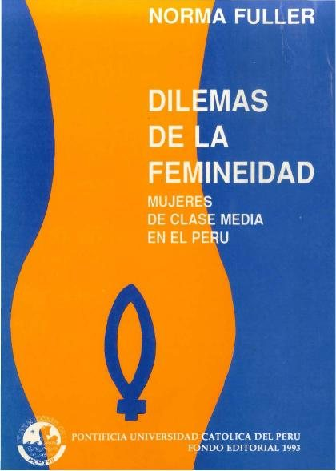
Desarrollo del juicio moral y de la complejidad cognitiva a través de un diseño instruccionalFrisancho, Susana
Desarrollo del juicio moral y de la complejidad cognitiva a través de un diseño instruccionalFrisancho, SusanaLa moral del enfermeroHermilio Valdizán Medrano
La moral del enfermeroHermilio Valdizán Medrano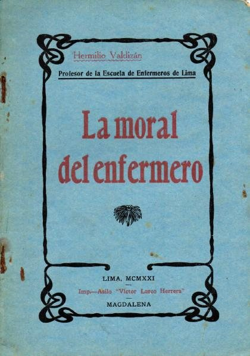
Fundamentos de la moralSpencer, Herbert, 1820-1903; García del Mazo, Siro
Fundamentos de la moralSpencer, Herbert, 1820-1903; García del Mazo, SiroObras de los moralistas griegos: Marco Aurelio, Teofrasto, Epicteto, CebesMarco Aurelio, Epicteto, Teofrasto, Cebes
Obras de los moralistas griegos: Marco Aurelio, Teofrasto, Epicteto, CebesMarco Aurelio, Epicteto, Teofrasto, CebesEstudio teorico-practico del tratamiento moral de la locura : tésis para el exámen profesional de medicina y cirujíaAlvarez, José M., active 1880, author
Estudio teorico-practico del tratamiento moral de la locura : tésis para el exámen profesional de medicina y cirujíaAlvarez, José M., active 1880, author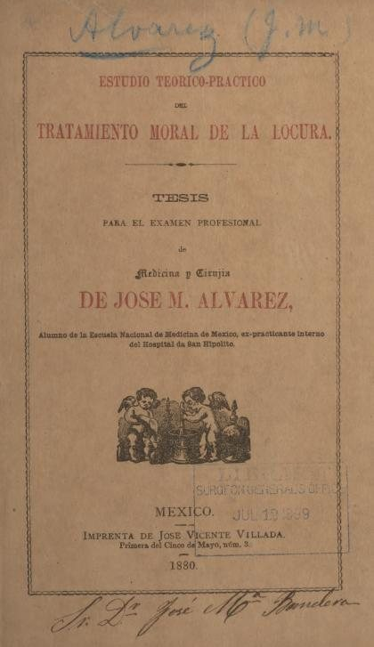
Medicina fantastica del espiritu, y espejo theorico-practico, en que se miran las enfermedades reynantes desde la niñéz, hasta la decrepitud: con recetas y aforismos, que suministra la moral, escrita en metro joco-serio y prosaDamian de Cosme
Medicina fantastica del espiritu, y espejo theorico-practico, en que se miran las enfermedades reynantes desde la niñéz, hasta la decrepitud: con recetas y aforismos, que suministra la moral, escrita en metro joco-serio y prosaDamian de Cosme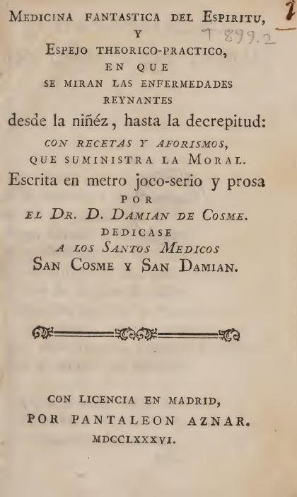
Moral socialHostos, Eugenio María de, 1839-1903; Blanco-Fombona, Rufino, 1874-1944 [Contributor]
Moral socialHostos, Eugenio María de, 1839-1903; Blanco-Fombona, Rufino, 1874-1944 [Contributor]Ética e inteligencia artificial en evaluación psicológicaKrieger, Virginia; Magallón Neri, Ernesto Mijail; Amador, Juan Antonio
Ética e inteligencia artificial en evaluación psicológicaKrieger, Virginia; Magallón Neri, Ernesto Mijail; Amador, Juan AntonioEl Hombre Mediocre: Ensayo de psicologia y moralIngenieros, José, 1877-1925
El Hombre Mediocre: Ensayo de psicologia y moralIngenieros, José, 1877-1925Ética del psicólogoAndrés Chamarro, Lidia Albert Gayà, Eva Juan Linares
Ética del psicólogoAndrés Chamarro, Lidia Albert Gayà, Eva Juan LinaresEducación en valores y desarrollo moral : jornadas celebradas en Barcelona mayo 1995Universitat de Barcelona. Institut de Ciències de l'Educació; Organización de Estados Iberoamericanos; Buxarrais Estrada, Maria Rosa; Martínez Martín, Miquel
Educación en valores y desarrollo moral : jornadas celebradas en Barcelona mayo 1995Universitat de Barcelona. Institut de Ciències de l'Educació; Organización de Estados Iberoamericanos; Buxarrais Estrada, Maria Rosa; Martínez Martín, MiquelMoral para intelectualesVaz Ferreira, Carlos, 1873-1958
Moral para intelectualesVaz Ferreira, Carlos, 1873-1958La tristeza contemporanea : ensayo sobre las grandes corrientes morales e intelectuales del siglo XIXFierens-Gevaert, H.
La tristeza contemporanea : ensayo sobre las grandes corrientes morales e intelectuales del siglo XIXFierens-Gevaert, H.Moral teórico-práctica y educación, para el uso de las escuelas y de las familiasTrigo, José M
Moral teórico-práctica y educación, para el uso de las escuelas y de las familiasTrigo, José MPrimera parte de La moral de SénecaSéneca, Lucio Anneo, 0004 a.J.C.-0065
Primera parte de La moral de SénecaSéneca, Lucio Anneo, 0004 a.J.C.-0065Memoria, entendimiento, y voluntad. Empresas, que enseñan, y persuaden su buen vso en lo moral, ... ofrecelas a D. Iuan Eustaquio Vicentelo, y Toledo, cavallero de el abito de Santiago. ... El hermano Lorenzo Ortiz, de la Compañia de IesusLorenzo Ortiz
Memoria, entendimiento, y voluntad. Empresas, que enseñan, y persuaden su buen vso en lo moral, ... ofrecelas a D. Iuan Eustaquio Vicentelo, y Toledo, cavallero de el abito de Santiago. ... El hermano Lorenzo Ortiz, de la Compañia de IesusLorenzo OrtizDignos de ser humanosRutger Bregman
Dignos de ser humanosRutger Bregman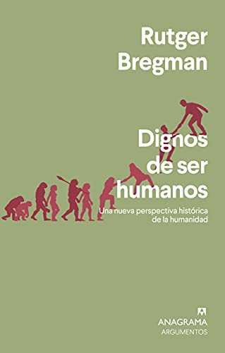
CompórtateRobert M. Sapolsky
CompórtateRobert M. Sapolsky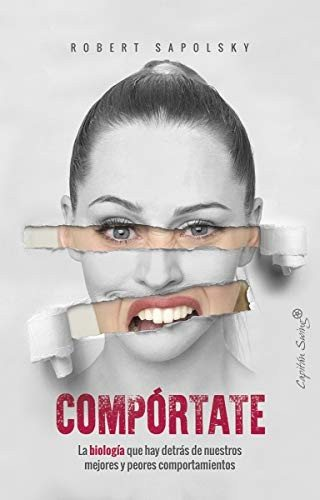
El mono que llevamos dentroFrans de Waal
El mono que llevamos dentroFrans de WaalLos ángeles que llevamos dentroSteven Pinker
Los ángeles que llevamos dentroSteven PinkerAporofobia, el rechazo al pobreAdela Cortina
Aporofobia, el rechazo al pobreAdela Cortina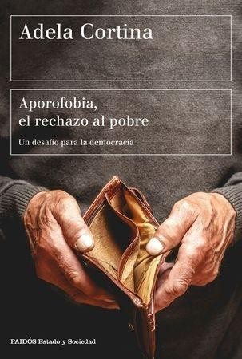
La mente de los justosJonathan Haidt
La mente de los justosJonathan Haidt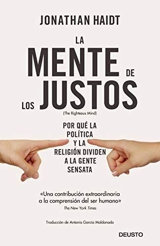
Por qué mentimos… en especial a nosotros mismosDan Ariely
Por qué mentimos… en especial a nosotros mismosDan Ariely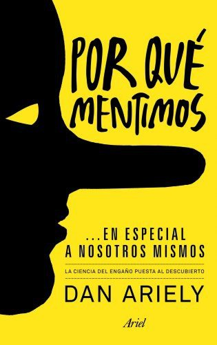
El efecto LuciferPhilip Zimbardo
El efecto LuciferPhilip Zimbardo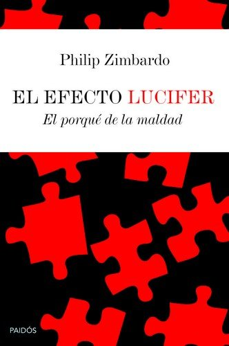
Ética para AmadorFernando Savater
Ética para AmadorFernando SavaterDecididoRobert M. Sapolsky
DecididoRobert M. Sapolsky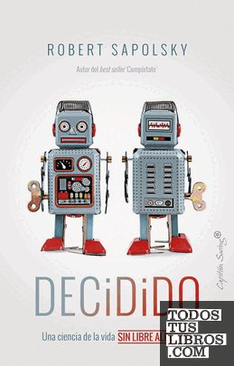
Contra la empatíaPaul Bloom
Contra la empatíaPaul BloomTemas relacionados
¿Estás eligiendo carrera?
Haz gratis el test de orientación vocacional de AURZANE: intereses, aptitudes, autoconcepto y hábitos de estudio, con informe completo.